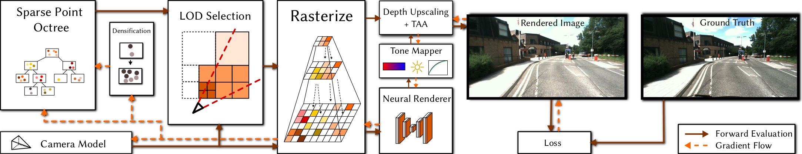

NePO: Neural Point Octrees for Large-scale Novel View Synthesis
-
Noah Lewis
FAU Erlangen-Nürnberg
-
Linus Franke
FAU Erlangen-Nürnberg
-
Darius Rückert
FAU Erlangen-Nürnberg
Voxray GmbH -
Marc Stamminger
FAU Erlangen-Nürnberg
Abstract
Point-based radiance field rendering produces impressive results for novel-view synthesis tasks. Established methods work with object-centric datasets or room-sized scenes, as computational resources and model capabilities are limited. To overcome this limitation, we introduce neural point octrees (NePOs) to radiance field rendering, which enables optimization and rendering of large scale datasets at varying detail levels, including different acquisition modalities, such as camera drones and LiDAR vehicles.
Our method organizes input point clouds into an octree from the bottom up, enabling Level of Detail (LoD) selection during rendering. Appearance descriptors for each point are optimized using the RGB captures, enabling our system to self-refine and address real-world challenges such as capture coverage discrepancies and SLAM pose drift. The refinement is achieved by adaptively densifying octree nodes during training and optimizing camera poses via gradient descent. Overall, our approach efficiently optimizes scenes with thousands of images and renders scenes containing hundreds of millions of points in real time.
Pipeline
Overview of our rendering pipeline.
Figure 1: We preprocess our unstructured point cloud to an octree. For rendering and optimization, we cut the octree based on level of detail (LOD) considerations and rasterize into multi-resolution feature images with progressively lower resolutions. A neural renderer and subsequent tone mapper resolve and combine the image pyramid. Following a temporal anti-aliasing module smooths the rendering. During training, all points as well as camera and tone mapping parameters are optimized, and the octree cells are further densified and pruned.
Depth Buffer Reconstruction.
We exploit our renderer's multi-resolution output and use hierarchical coverage-based depth upsampling [Grossman 1998] to reconstruct an approximate (but filled) depth buffer, which is then used for sample reprojection.| Depth filled | Point depth |
Temporal Smoothing.
We exploit our renderer's multi-resolution output and use hierarchical coverage-based depth upsampling [Grossman 1998] to reconstruct an approximate (but filled) depth buffer, which is then used for sample reprojection.| Depth filled | Point depth |
Citation
Acknowledgements
We would like to thank all members of the Visual Computing Lab Erlangen for the fruitful discussions.
Special thanks to Richard Marcus for preparing and providing the DurLAR dataset in a ready-to-use format.
The authors gratefully acknowledge the scientific support and HPC resources provided by the National High Performance Computing Center of the Friedrich-Alexander-Universität Erlangen-Nürnberg (NHR@FAU) under the project b162dc. NHR funding is provided by federal and Bavarian state authorities. NHR@FAU hardware is partially funded by the German Research Foundation (DFG) – 440719683.
Linus Franke was supported by the Bavarian Research Foundation (Bay. Forschungsstiftung) AZ-1422-20.
The website template was adapted from Refinement of Monocular Depth Maps via Multi-View Differentiable Rendering, who borrowed from VET, who borrowed from Zip-NeRF, who borrowed from Michaël Gharbi and Ref-NeRF. Image sliders are from BakedSDF.
References
[Kerbl and Kopanas 2023] Kerbl, B., Kopanas, G., Leimkühler, T., and Drettakis, G. 2023. "3D Gaussian splatting for real-time radiance field rendering". ACM Transactions on Graphics (ToG), 42(4).
[Rückert 2022] Rückert, D., Franke, L., and Stamminger, M., 2022. "Adop: Approximate differentiable one-pixel point rendering". ACM Transactions on Graphics (ToG), 41(4).
[Kerbl and Meuleman 2024] Kerbl, B., Meuleman, A., Kopanas, G., Wimmer, M., Lanvin, A. and Drettakis, G., 2024. "A Hierarchical 3D Gaussian Representation for Real-Time Rendering of Very Large Datasets". ACM Transactions on Graphics (ToG), 43(4).